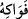
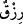
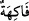

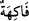
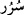
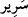
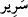
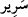
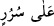
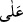
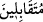
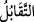
Cümle âlem ceşme ve pınar
Çeşmeden ayrı düşen herkesin dudağı
Irmak kenarında olanın dudağına nasıl benzer!
“Türlü meyveler vardır.” “__WORD__ kelimesi bir önceki âyetteki “__WORD__ kelimesinden
bedeldir ve yaş kuru meyve ve çerez olarak yenilmesinden refah ve mutluluk duyulan
yiyecek anlamına gelen “__WORD__ kelimesinin çoğuludur. Cennet ehlinin bütün rızıkları “__WORD__ yani azık, katık ve gıda değil de yalnız lezzet ve zevk için olduğundan burada
rızıklar içinden “__WORD__ özel olarak zikredilmiştir. Cennet ehlinin oradaki hilkat ve
yaratılışları ebediliğe göre düzenlendiği için cennet ehlinin böyle azık, katık ve hayatı
idame ettirecek zorunlu gıdalara ihtiyaçları yoktur. Oradaki hilkat ve yaratılış değişim,
bozulma pörsüme, eskime gibi durumlardan mahfuz ve muhkemdir. Dünya ehlinin hilkat
ve yaratılışı böyle değildir. Dünyadaki yaratılış fenâ ve yokluk üzere dizayn edilmiştir.
Bu hilkat zayıftır, varlığını idâme ettirebilmesi için zorunlu gıdaya muhtaçtır. Ancak çok
özel bazı kullarda dünyada ve berzah âlemi olan kabirde de bozulma ve dağılma olmaz.
Bazıları der ki meyveler diğer yemeklerin tâbileri olup onların ardından takdim edildiği
için onlar zikredilince diğer yemeklerin zikrine hacet kalmamıştır.
Fakir (Bursevî) der ki, kısaca zâhir olan şudur: Burada yalnız meyvelerin
zikredilmesi Arap diyarında özellikle Hicaz bölgesinde çeşit çeşit meyveler
bulunmadığı için meyvelerin zikriyle onlar iman, ihlas ve cennete teşvik edilmişlerdir.
Bu ikram, himmet sahiplerine sevap ve ödüllerin en büyüğü ve en münasibidir. Bazıları
der ki Allah Teâlâ bu kulların rızıklarının ayrıntısında bu rızıkların kendilerine tâzim,
hürmet ve ikram şekliyle ulaştığını özellikle arzetmiştir. Zira yenilen şeyin tâzim,
hürmet ve ikram olmaksızın yiyene ulaşması hayvanlara layık bir durumdur.
“Naîm cennetlerinde karşılıklı koltuklar üzerine kurulmuş oldukları halde” Rableri
nezdinde “kendilerine ikram edilir.” Onlara hiçbir alçaklık ve aşağılama ârız olmaz. “__WORD__ kelimesi “__WORD__ kelimesinin çoğuludur. “__WORD__ ise mutlu huzurlu bir şekilde üzerine
oturulan süslenmiş/bezenmiş taht ve koltuklardır. Zira nimet sahiplerinin durumu böyle
olur. Ölünün konulduğu teneşir denilen “__WORD__ de görünüşte buna benzer. Ayrıca dünya
mü’minin zindanıdır. Ölen mü’min bu zindandan kurtulup Allah’a dönüşüyle yaşamış
olduğu sürur ve sevinçten dolayı da bir hayır, uğur ve bereket temennisiyle teneşire
“serîr” denilmiştir. Hz. Peygamber (s.a.) şöyle buyurmuştur: “Dünya mü’minin zindanı
kâfirin cennetidir.”[206]
Burada “__WORD__ kelimesindeki “__WORD__ harfi cerri “__WORD__ kelimesine müteallik
olabilir. Yani karşı karşıya, yüz yüze birbirlerinin cemâliyle şad ve mutlu olurlar,
demektir. “__WORD__ ifadesi, insanların birbirlerinin yüzüne bakarak karşılıklı oturmalarını
ifade eder ki bu dostluk ve mutluluk için daha mükemmel bir durumdur. Denilir ki
cennette koltuk ve kanepeler, oturanlarla beraber döndüğü için onlar birbirlerinin
enselerine bakmazlar. İnsanların birbirlerini görerek bundan ünsiyet ve dostluk